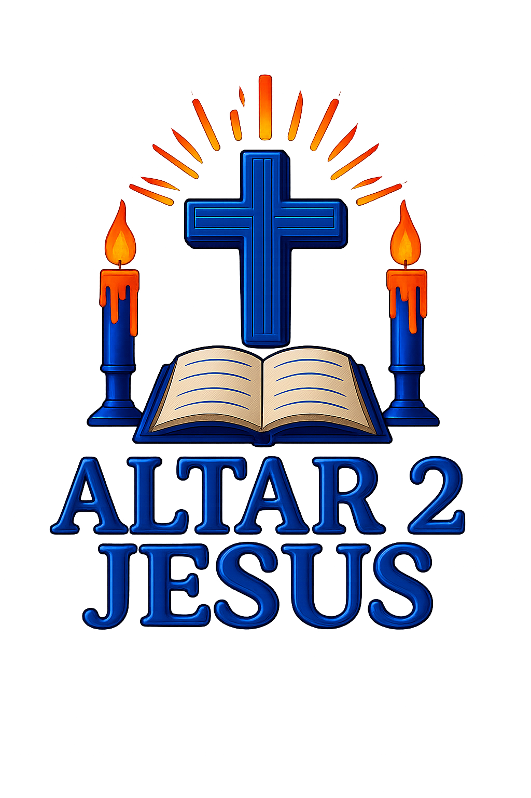

Before You Begin
Adam and Eve were driven from Eden, and the ground itself bore the weight of their choice.
Echoes of the Journey — Episode 3 of 21
You stand in Cain's place. Eleven moments will ask what he saw, felt, and chose. Answer as the story remembers it.
Scripture quotations taken from the (NASB®) New American Standard Bible®, Copyright © 1960, 1971, 1977, 1995, 2020 by The Lockman Foundation. Used by permission. All rights reserved. www.Lockman.org
